Story 4
NEW_INSERTThere is no before version of this new page. The V31 hall is shown for story and visual context only.
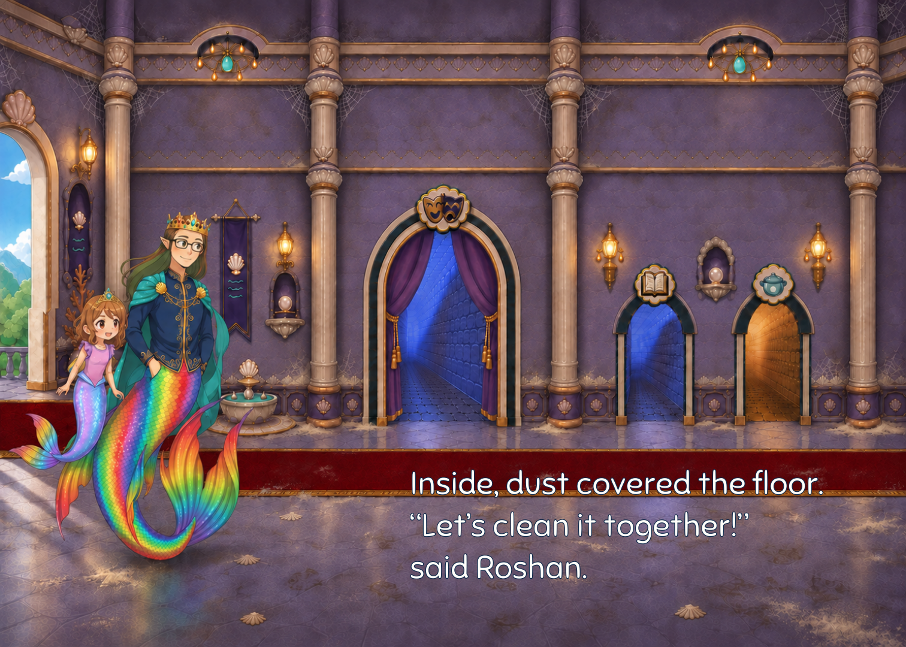
Inside, dust covered the floor. “Let’s clean it together!” said Roshan.

Cobwebs in the corners. Dust on the chest!
Story 13
REVISED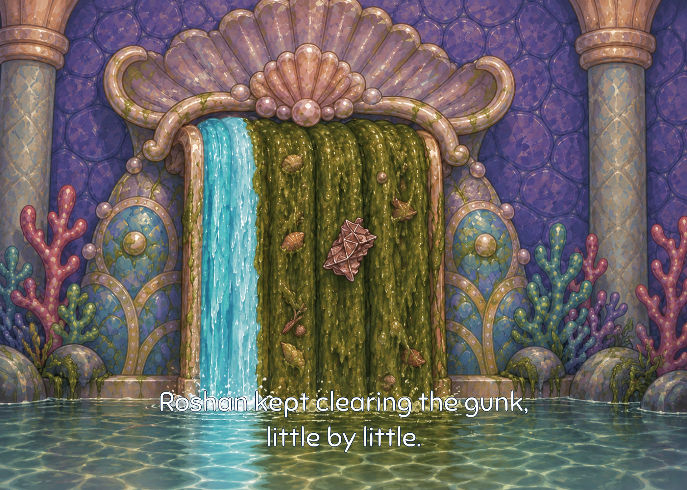
Roshan kept clearing the gunk, little by little.

“Rainbow colors!” said Roshan. She kept clearing the gunk.
Story 14
REVISED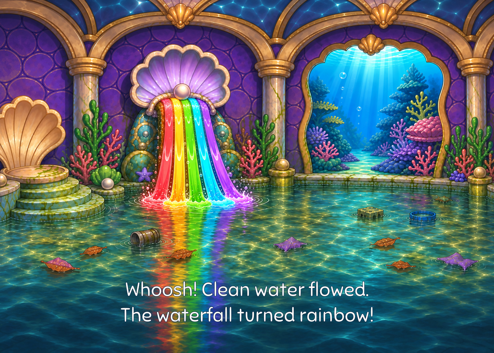
Whoosh! Clean water flowed. The waterfall turned rainbow!

Whoosh! The waterfall turned rainbow! “This swimming pool is magic,” said Daddy. “It makes the water rainbow-colored!”
Story 22
REVISED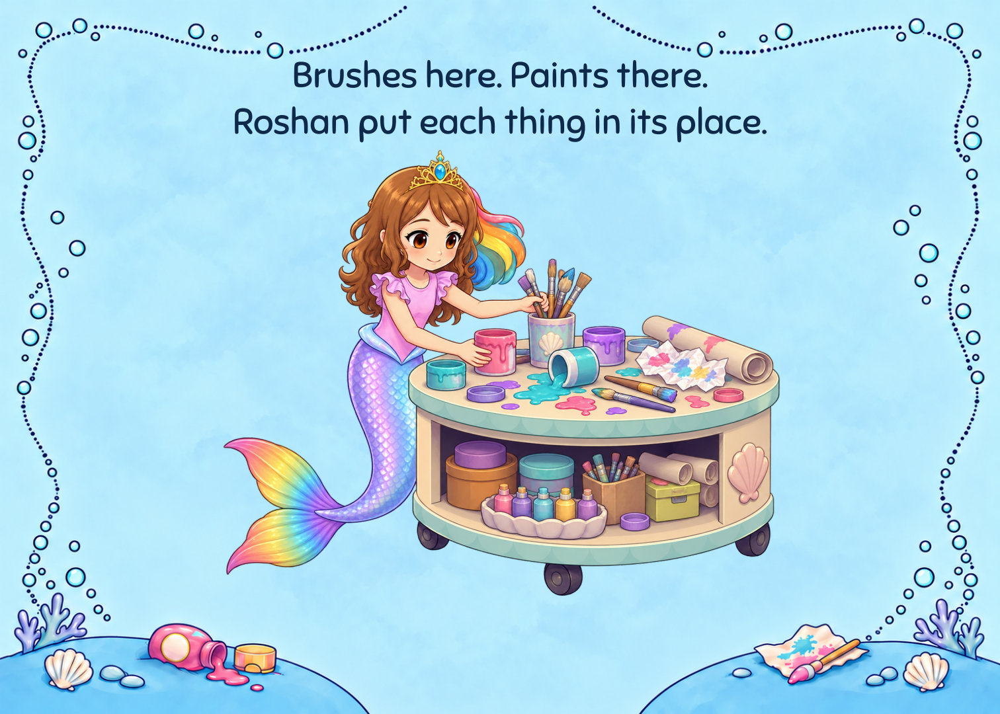
Brushes here. Paints there. Roshan put each thing in its place.

Roshan put the paints in their places. Then she scrubbed the table. Scrub, scrub!
Story 30
REVISED
Scrub, scrub! The table was clean. Everything was back in its place.

Pearl Castle was clean again. It was time to rest.
Story 31
REVISEDThe two V31 ending beats are shown together beside their V32 combined page.

“Your rainbow was there all along, Grand Puff. We helped it shine!”
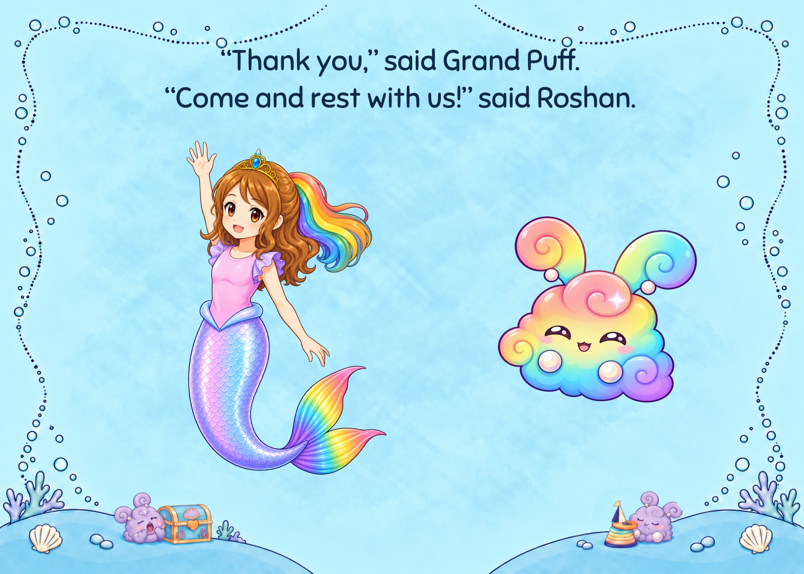
“Thank you,” said Grand Puff. “Come and rest with us!” said Roshan.

“We helped your rainbow shine!” said Roshan. “Thank you!” said Grand Puff. “Come and rest with us!” said Roshan.
Front cover
EXACT_REUSE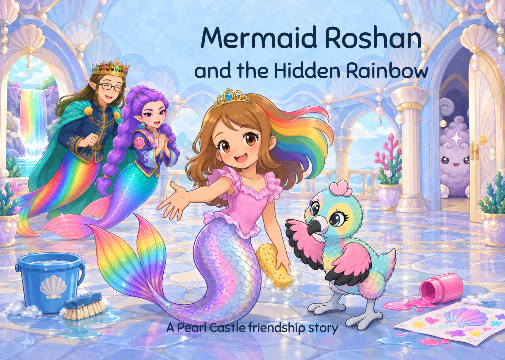

Story 1
EXACT_REUSE
“Look, Daddy! Pearl Castle!”

“Look, Daddy! Pearl Castle!”
Story 2
EXACT_REUSE
Roshan and Daddy landed at Sky Lagoon. Pearl Castle was close by.

Roshan and Daddy landed at Sky Lagoon. Pearl Castle was close by.
Story 3
EXACT_REUSE
“Let’s look inside, Daddy,” said Roshan.

“Let’s look inside, Daddy,” said Roshan.
Story 5
EXACT_REUSE


Story 6
EXACT_REUSE
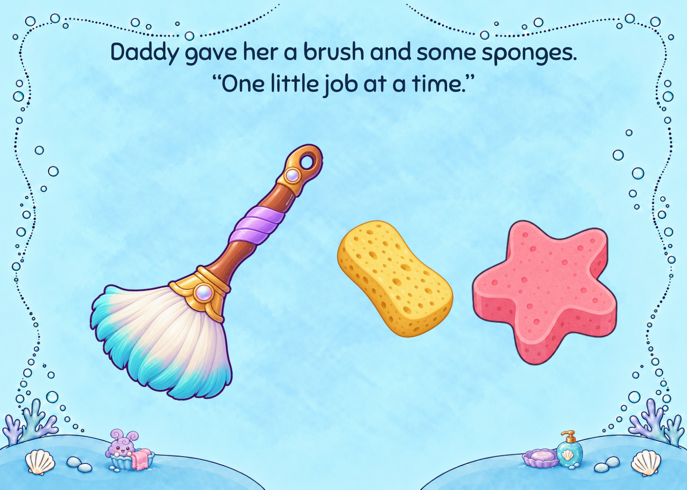
Daddy gave her a brush and some sponges. “One little job at a time.”

Daddy gave her a brush and some sponges. “One little job at a time.”
Story 7
EXACT_REUSE
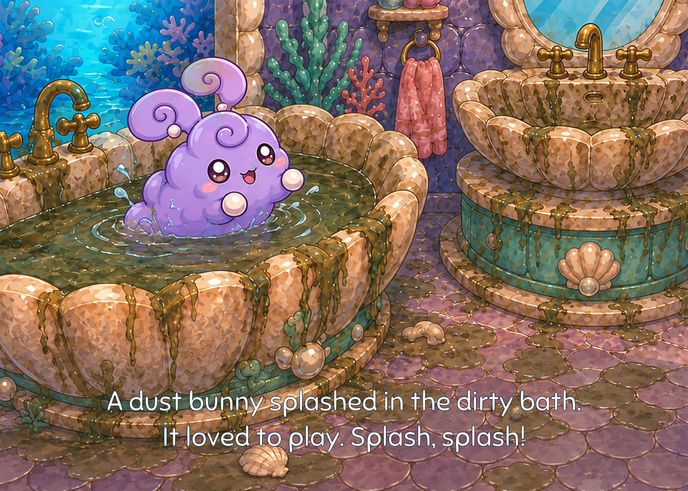
A dust bunny splashed in the dirty bath. It loved to play. Splash, splash!

A dust bunny splashed in the dirty bath. It loved to play. Splash, splash!
Story 8
EXACT_REUSE
Round and round went the sponge. Roshan wiped the sink clean.

Round and round went the sponge. Roshan wiped the sink clean.
Story 9
EXACT_REUSE
Roshan let the dirty bath water out. Then she scrubbed the tub. Scrub, scrub!

Roshan let the dirty bath water out. Then she scrubbed the tub. Scrub, scrub!
Story 10
EXACT_REUSE
Clean water filled the bath. The dust bunny splashed again!

Clean water filled the bath. The dust bunny splashed again!
Story 11
EXACT_REUSE
A mermaid named Rumi was stuck under the gunk in the pool.

A mermaid named Rumi was stuck under the gunk in the pool.
Story 12
EXACT_REUSE
Rumi had lived in Pearl Castle for hundreds of years. “I’ll help!” said Roshan. Scoop, scoop!

Rumi had lived in Pearl Castle for hundreds of years. “I’ll help!” said Roshan. Scoop, scoop!
Story 15
EXACT_REUSE
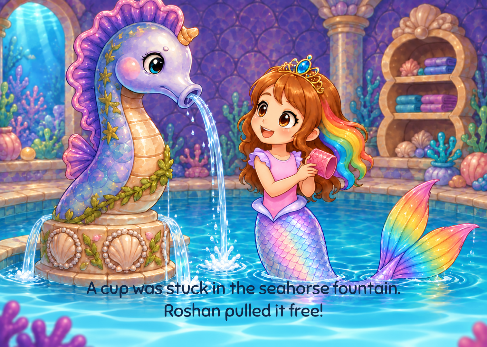
A cup was stuck in the seahorse fountain. Roshan pulled it free!

A cup was stuck in the seahorse fountain. Roshan pulled it free!
Story 16
EXACT_REUSE
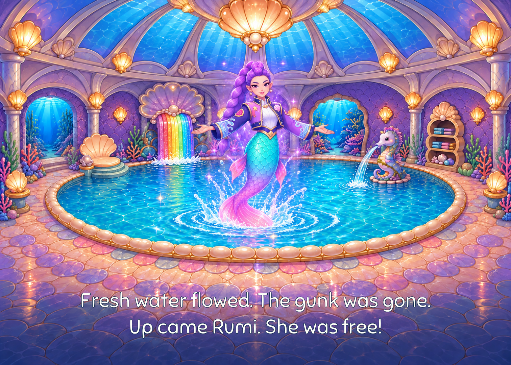
Fresh water flowed. The gunk was gone. Up came Rumi. She was free!

Fresh water flowed. The gunk was gone. Up came Rumi. She was free!
Story 17
EXACT_REUSE
“You helped me!” said Rumi. She gave Roshan a great big hug.

“You helped me!” said Rumi. She gave Roshan a great big hug.
Story 18
EXACT_REUSE
Chirp, chirp! “Someone needs help!” said Roshan.

Chirp, chirp! “Someone needs help!” said Roshan.
Story 19
EXACT_REUSE
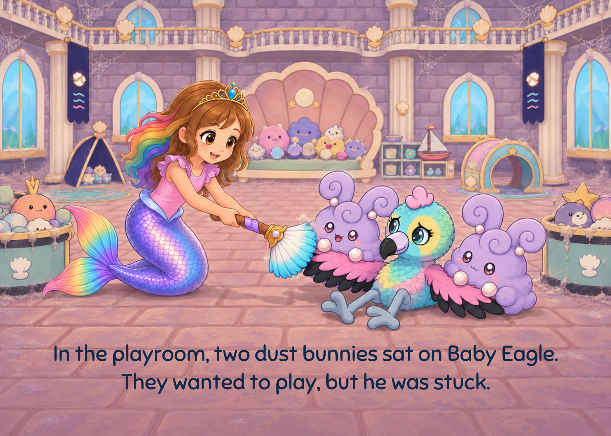
In the playroom, two dust bunnies sat on Baby Eagle. They wanted to play, but he was stuck.

In the playroom, two dust bunnies sat on Baby Eagle. They wanted to play, but he was stuck.
Story 20
EXACT_REUSE
“I’ll help!” said Roshan. She gently brushed one bunny away, then the other.

“I’ll help!” said Roshan. She gently brushed one bunny away, then the other.
Story 21
EXACT_REUSE
Baby Eagle was free! “Let’s play gently,” said Roshan.

Baby Eagle was free! “Let’s play gently,” said Roshan.
Story 23
EXACT_REUSE
One last door was still shut. A low rumble came from behind it...

One last door was still shut. A low rumble came from behind it...
Story 24
EXACT_REUSE
Grand Puff! He was so dusty. He did not feel well.

Grand Puff! He was so dusty. He did not feel well.
Story 25
EXACT_REUSE
“Hold on, we’ll make you feel clean and better!” said Roshan.

“Hold on, we’ll make you feel clean and better!” said Roshan.
Story 26
EXACT_REUSE
Daddy, Rumi, and Baby Eagle helped Roshan. Together, they washed Grand Puff. Scrub, scrub!

Daddy, Rumi, and Baby Eagle helped Roshan. Together, they washed Grand Puff. Scrub, scrub!
Story 27
EXACT_REUSE
Soft bubbles covered Grand Puff. Under the bubbles, his colors began to shine.

Soft bubbles covered Grand Puff. Under the bubbles, his colors began to shine.
Story 28
EXACT_REUSE
POP! Grand Puff sprang out, rainbow bright! The dust fell away.

POP! Grand Puff sprang out, rainbow bright! The dust fell away.
Story 29
EXACT_REUSE
Down came Grand Puff, soft and small. He felt like himself again.

Down came Grand Puff, soft and small. He felt like himself again.
Story 32
EXACT_REUSE
There was room for everyone. They curled up in the bubbles and fell asleep.

There was room for everyone. They curled up in the bubbles and fell asleep.
Rear cover
EXACT_REUSE
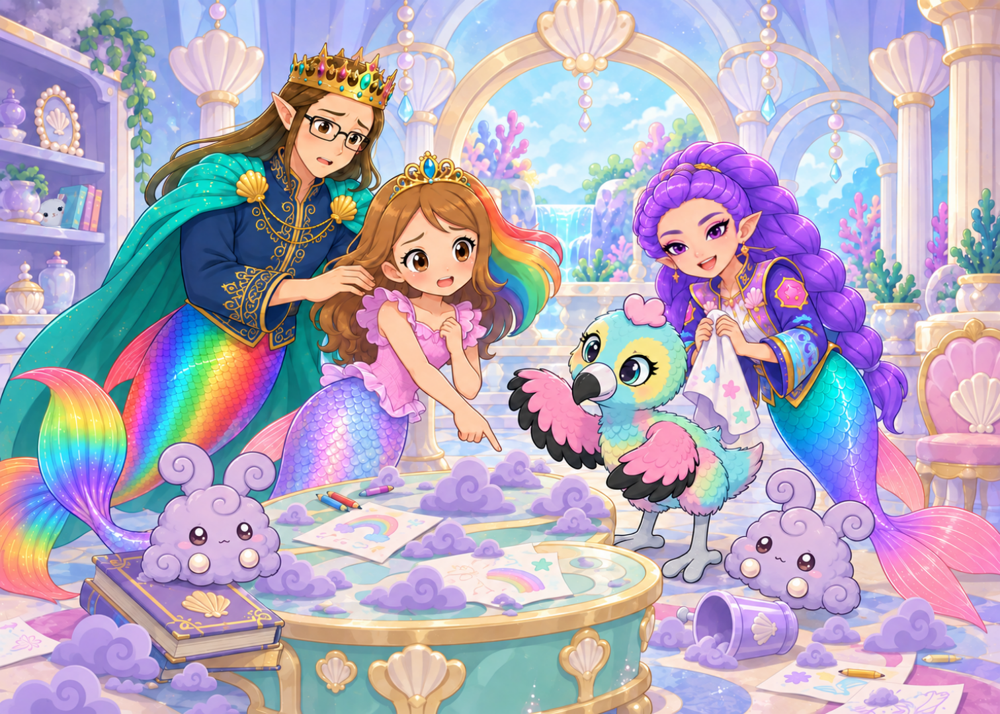